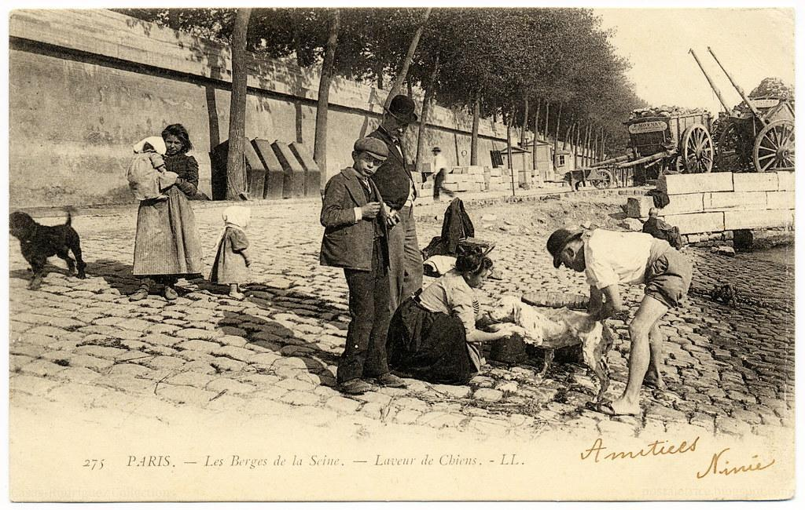
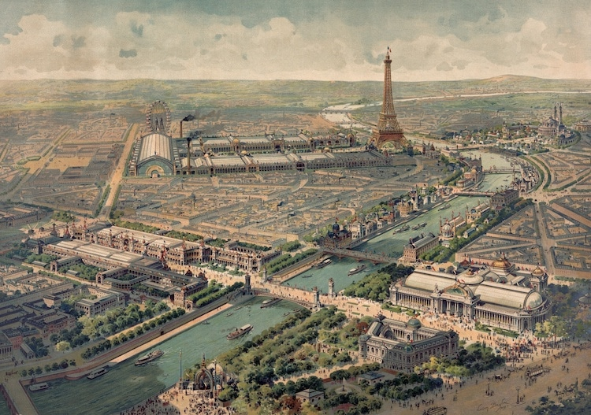

A Era do Otimismo Moderno
A Belle Époque (c. 1871–1914) marcou o florescimento urbano e cultural na Europa e nas Américas: artes em ebulição, ciência em ritmo acelerado e uma nova vida social nos cafés, salões e bulevares.
Esta linha do tempo destaca marcos do período até o seu desfecho na Primeira Guerra Mundial.

